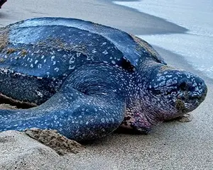

Turtles Info-centre
Turtle Categories
Green Turtle (Chelonia mydas)
The green sea turtle is the second largest after the leatherback. They can weigh up to 500 lbs (225 kg) and reach four feet (1.2 m) in length. The adult is an herbivore, dining on sea grasses, seaweeds, algae and other forms of marine plant life. Their beak is sharp and finely serrated, perfectly adapted for grazing in seagrass beds and scraping algae off of hard surfaces.
This species is the only one to come on shore regularly to bask. Basking only occurs in Hawaii, particularly the Northwestern Hawaiian Island chain, the Galapagos Islands, and in some areas of Australia.
The Green Turtle is the most common turtle species in Sri Lanka. Green Turtles nest on several beaches around the country, including the popular Rekawa Beach and Kosgoda Beach.
Hawksbill Turtle (Eretmochelys imbricata)
Considered by many to be the most beautiful of sea turtles for their colorful shells, the hawksbill is found in tropical waters around the world. They spend their time in coral reefs, rocky areas, lagoons, mangroves, oceanic islands, and shallow coastal areas.
Named for its narrow head and sharp, bird-like beak, hawksbills can reach into cracks and crevices of coral reefs looking for food. Their diet is very specialized, feeding almost exclusively on sponges. One of the smaller turtles, adults weigh between 100-200 pounds (45 - 90 kg) and reach 2-3 feet (roughly .5 to 1 meter) in length.
They nest on various beaches around Sri Lanka, including Pigeon Island, Rumassala, and Hikkaduwa.
Loggerhead Turtle (Caretta caretta)
One of the larger species of sea turtles, the loggerhead turtle ranges from 200-400 pounds (90 - 180 kg) and up to 4 feet in length (1.2 meters). They occur throughout temperate and tropical regions of the Pacific, Indian, and Atlantic Oceans.
One of the most abundant of the species found in the US, they are named for their large head and strong crushing jaw (right) which enables them to eat hard-shelled prey such as crabs, conchs, and whelks.!
Loggerhead Turtles are less common in Sri Lanka compared to Green Turtles and Olive Ridleys.While nesting, they prefer remote and less disturbed beaches such as Panama Beach in the eastern part of the country.
Leatherback Turtle (Dermochelys coriacea)
The largest of all sea turtles, and one of the largest reptiles on earth, the leatherback turtle ranges in size from 4-8 feet in length (1.2 - 2.4 meters) and weighs between 500-2,000 pounds (225 - 900 kg). The average adult measures in between 5-6 feet (1.5 - 1.8 m) and weighs 600-800 pounds (270 - 360 kg).
The oldest of all sea turtle species, it has been around for more than 150 million years! They survived the extinction of the dinosaurs and thrived until the last several decades when human interactions have taken a major toll.
While Leatherbacks can occasionally be seen in Sri Lankan waters, their nesting occurrences are rare.
Olive Ridley Turtle (Lepidochelys olivacea)

The second smallest after the Kemp’s ridley, the olive ridley turtles weigh between 75-100 pounds (34 - 45 kg) and reach 2-2 ½ feet (roughly .6 m) in length. They are named for their pale green carapace and are the most abundant of sea turtle species.
Like the Kemp’s ridley, olive ridleys nest in mass referred to as an “arribada.” During arribadas, thousands of females may nest over the course of a few days, generally once a month for p. Adults reach sexual maturity around the age of 15 years.
They visit Sri Lankan beaches in large numbers for mass nesting events called arribadas. Some popular Olive Ridley nesting sites in Sri Lanka include Rekawa Beach, Kosgoda Beach, and Pottuvil.
Kemp's Ridley Turtle (Lepidochelys kempii)
Until recently, the endangered Kemp’s ridley turtle was on the brink of extinction in the 1960's. Thanks to strict protection laws which protected their nesting beaches in Mexico and reduced accidental capture in fishing gear, the species has begun a slow, but steady comeback from a previous low of only 200 nesting individuals in the 1980’s, to an estimated 7,000 - 9,000 individuals today.
These are the smallest of the seven sea turtle species, weighing between 75-100 pounds (35 - 45 kg) and measuring approximately 2 feet (.6 m) in length.
Not found in Sri Lanka
Flatback Turtle (Natator depressus)
The flatback turtle is named after its flat carapace, or shell, which is unlike the curved shell of other sea turtle species. The carapace is pale grayish-green in color with the outer margins distinctly upturned. An adult flatback weighs 200 pounds and is approximately 3 feet in length. They have the smallest distribution of all the species and breed and nest only in Australia.
Flatbacks are preyed upon by Saltwater crocodiles, the largest reptile on earth. Adult females have been observed being attacked by crocs while attempting to nest.Despite its small range and non-migratory behavior, until now this has been the least studied of the sea turtle species, perhaps due in part to the remoteness of much of their habitat.
Not found in Sri Lanka
| Name | Appearance | Adult weight | Adult size | Diet | |
|---|---|---|---|---|---|
| Common | Scientific | ||||
| Green Sea Turtle | Chelonia mydas | Rouded head, greenish-black coloration, smooth domed carapace with teardrop shape | 136-199 kgs | 0.9-1.2m | Seagrass, mangrove leaves and shoots, jellyfish and algae |
| Hawksbill Sea Turtle | Eretmochelys imbricata | Narrow head and beak, yellowish-brown coloration, carapace mottled with orange or red-tinned browns and overlapping scutes | 45-68 kgs | 0.83m | Primarily sponges but also tunicates, mangrove shoots, algae and benthic invertebrates |
| Loggerhead Sea Turtle | Caretta caretta | Broad head with yellow cheeks, red-brown, heart-shaped carapace | 113 - 181 kgs | 1 - 1.1 m | Mostly hard-shelled invertebrates, including crabs, mollusks and shrimp, but also jellyfish |
| Leatherback Sea Turtle | Dermochelys coriacea | Blunt head with visible pineal gland or ‘pink spot’, grayish black with white patches, leathery carapace with 7 ridges (5 dorsal and 2 on sides) | Females 250 - 500 kgs and Males up to 900 kgs | 1.20 - 2.40 m | Jellyfish, salps, siphonophores, pyrosomes and other soft-bodied invertebrates |
| Olive Ridley Sea Turtle | Chelonia mydas | Triangular head with light cheeks, grayish-olive coloration, rounded carapace | Up to 45 kgs | 0.6 - 0.76 m | Wide variety of crustaceans, mollusks, bryozoans and algae |
| Kemp's Ridley Sea Turtle | Lepidochelys kempii | Gray to light olive green rounded carapace | Up to 45 kgs | 0.6m | Crabs (particularly for juveniles), fish, jellyfish, mollusks |
| Flatback Sea Turtle | Natator depressus | Olive greenish carapace with flat contour | Up to 90 kgs | 1m | Jellyfish, sea cucumbers and other soft-bodied invertebrates |
| Turtles Info-centre © All rights reserved | |||||